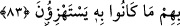

et-Te’vîlâtü’n-Necmiyye’de der ki: “Yeryüzünde bıraktıkları eserler”, çok mâmur
eserler demek de olabilir. Beden ve ağırlıklarının büyüklüğünden dolayı ayaklarının
toprakta bıraktığı izler demek de…
Şeyh Muhyiddin İbn Arabî (k.s.)’un şöyle dediği anlatılır: 585 yılında Endelüs’te
olduğum sırada Yûnus (a.s.) kavminden bir topluluğa rastladım. Bunlardan birinin
toprakta bıraktığı izi ölçtüğümde ayak uzunluğunun 3 + 2/3 karış (üç karış + üçte iki
karış) olduğunu gördüm.
“Fakat kazandıkları şeyler” yâni mallar, çocuklar ve ordu düzenlemek gibi
kazançları ya da kazandıkları “onlara asla fayda vermemiştir,” başlarına geleni
savuşturamamıştır.
Böylesine büyük imkânlar ve büyük zenginliklerin öncekilere zarar ve kayıptan başka
hiçbir faydası dokunamadı ise bu gariban müşriklerin durumu nice olur! Birinci
“mâ”nın, “Kazandıklarının bunlara ne gibi bir faydası oldu hâ!” anlamında soru “mâ”sı
olması da câizdir. Ancak ikinci “mâ” her iki takdire göre de “ağnâ”nın fâilidir. Birinci
“mâ”nın başındaki “fâ” ise çokluklarının, muazzam güçlerinin ve bununla “kazanıp
durdukları” şeylerin âkıbetini göstermektedir. Yani netice, sıralama ve tertîb ifâde
etmektedir. Bunun kendilerine yeteceğini iddiâ ediyorlardı. Ama, bu iddiânın sonucu,
“fayda sağlayamamak”tan başka hiçbir şey olmadı. Dolayısıyla maksadın tersi ve
istenenin zıddı olmasına rağmen, bu itibar, sonuç makamına kâim olmuştur. Tıpkı “ben
ona öğüt verdim, ama o almadı” sözünde olduğu gibi. Yâni “ben aksini beklemekle
birlikte, öğüdümün sonucu öğüt almamasından başka bir şey olmadı” demektir.
83. Peygamberleri onlara apaçık bilgiler getirince, onlar kendilerinde bulunan
(beşerî) bilgiye güvendiler (onu alaya aldılar). Alaya aldıkları şey kendilerini
boğuverdi.
“Peygamberleri onlara apaçık bilgiler,” mûcizeler ve apaçık deliller getirince...
Buradaki “fâ” da yukarıda özetle anlatılan ve müphem bırakılan “fayda
sağlayamama”nın tefsir ve açıklanması mahiyetinde olup “fâ-i ta’kıbiyye ve
tefsîriyye”dir. Çünkü tefsir müfesseri takip eder. Konuşmalarda bu tür fâlar sık sık
kullanılır ki temelinde müphem bırakılan bir şeyin tefsir edilmesi, özetle geçilen bir
şeyin de genişçe açıklanması yatmaktadır.
“Onlar kendilerinde bulunan (beşerî) bilgiye güvendiler.” Buradaki bilgi “Her
bölük kendi elindeki ile böbürlenmektedir.” (er-Rûm 30/32) âyetiyle birlikte
düşünülmelidir. Yani, sahip oldukları şeylerle sevinç ızhar ederek peygamberlerin
bilgisini küçümsediler. Ayette bilgi diye bahsedilen şey, aslında “Öldükten sonra